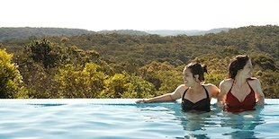
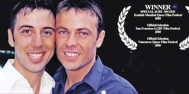
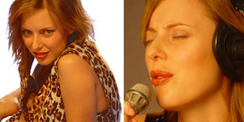
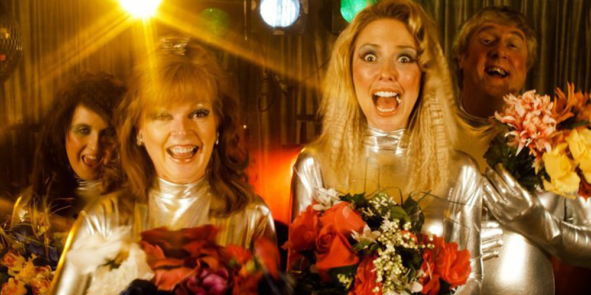
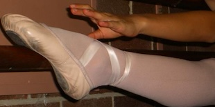
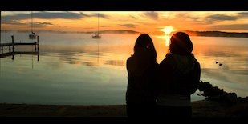

ROMP
Writer / Director
90min Webseries (6 webisodes)
90min Webseries (6 webisodes)
-
SCREENINGS:
* Telly Awards 2023
* Rose d'Or Awards 2023
* Seoul Webfest (aka KWEBFEST) 2023
* Nouvelle Vague AWARDS - Marseille Webfest 2023
* NZ Webfest 2023
* Rio Webfest 2023
* LA Webfest 2023
* Firstglance Film Festival LA 2023
* Cusco WebFest 2023
* The 2023 Creators’ Choice Awards 2023
* Baltimore Next Media Web Festival 2023
* Chile Digital Fest 2023
* White Vulture Film Festival 2023
* Series Web Awards (SWA) 2023
* Lima WebFest 2023
* Apulia Web Fest 2022
* Mardi Gras Film Festival 2022
* Die Seriale 2022
* T.O. Webfest 2022
* Miami Webfest 2022
* World Webfest Mania New York 2022
* Minnesota Webfest 2022

MILK AND VODKA
Writer / Director
-
3min | Comedy
-
SCREENINGS:
* MIX Mexico, Mexico 2015
* Let them Eat Cake Festival, Italy 2014
* Long Island Gay and Lesbian Film Festival, USA 2014
* Rio Festival de Gay de Cinema, 2014
* Outview Queer film festival, 2014
* Bangalore Queer Film Festival 2014
* Kashish Mumbai Film Festival, India 2013
* Kansas City LGBT Film Festival, USA 2013
* Paris Feminist Film Festival, France 2013
* Queer Film Festival, Bremen 2013
* Melbourne Queer Film Festival, Australia 2013
* Little Queer Film Festival, Melbourne 2013
* Mardi Gras Film Festival, Sydney 2013

HOLDING HANDS
Co-Director / Editor
67min | Documentary
67min | Documentary
-
SCREENINGS:
* Cairns Queer Film Festival, Australia 2012
* Austin Gay and Lesbian Film Festival, USA 2011
* Fire Festival, Barcelona, Spain 2011
* Torino GLBT Film Festival, Torina 2011
* MIX Copenhagen Film Festival, Denmark 2011
* Frames of Mind Film Festival, Canada 2011
* Merlinka Film Festival, Belgrade Serbia 2011
* Rainbow Reels Queer Film Festival, Cambridge UK 2011
* Anchorage International Film Festival, Alaska 2010
* Rendezvous with Madness Film Festival, Toronto, Canada 2010
* Reeling: Chicago Gay and Lesbian Film Festival, USA 2010
* Connecticut Gay and Lesbian Film Festival / EROS Film Festival USA 2010
* It Gets Better Film Festival, Houston USA 2010
* Spokane International Film Festival, USA 2010
* Copenhagen Gay and Lesbian Film Festival, Denmark, 2010
* Imageout: Rochester LGBT Film Festival, USA 2010
* Frameline Film Festival, San Francisco 2010
* Vancouver Queer Film Festival, Canada 2010
* Out Takes Film Festival, New Zealand 2010
* Seen and Heard Film Festival, Sydney 2010
* Kashish – Mumbai International Queer Film Festival, India 2010
* Pink Apple Film Festival, Switzerland 2010
* Melbourne Queer Film Festival, Melbourne 2010
* Bent Lens Film Festival, Canberra 2009
* QueerDoc, Sydney 2009
* TasPride Festival, Tasmania 2009

THE VICIOUS & THE DELICIOUS
Writer / Director
12min | Comedy
12min | Comedy
-
SCREENINGS:
* Fabulosa Fest, 2012
* Queer Film Night, Germany 2010
* Boo Hoo Film Festival, Sydney 2010
* MIX Milano Film Festival, Italy 2009
* Festival del Mar, Ibiza Int. Gay and Lesbian Film Festival, Spain 2009
* Lesbian Film Festival of Freiburg, Germany 2009
* My Queer Career, Sydney Mardi Gras Film Festival, Australia 2009
* Frameline at the Center, San Francisco 2009
* PERV Film Festival, Sydney 2009
* The Space 4 Shorts Film Festival, Peterborough UK 2009
* Bloomington Pride Film Festival, Bloomington, IN, USA 2009
* The Iris Prize, Wales 2008
* Palm Springs International Short Festival, USA 2008
* 6th Zinegoak, Bilbao International GLT Film Festival, Spain 2008
* Festival del Sol, Canary Islands 2008
* 24th FGLF Festival, Ljubjana, Slovenia 2008
* Image + Nation Film Festival, Montreal, Quebec 2008
* Roze Filmdagen, Amsterdam 2008
* Backyard Short Film Festival, Palm Springs, USA 2008
* Reel Affirmations, Washington USA 2008
* Indianapolis Lesbian and Gay Film Festival, USA 2008
* North Carolina Gay & Lesbian Film Festival, USA 2008
* Frameline International Film Festival, San Francisco 2008
* Connecticut Gay & Lesbian Film Festival, USA 2008
* Inside Out Toronto Lesbian and Gay Film and Video Festival, Canada 2008
* London Lesbian Film Festival, Ontario, Canada 2008
* Brisbane Queer Film Festival, Australia 2008
* Optus One80 Project, Australia 2008

SPARK - THE MUSICAL
Writer / Director
16min | Comedy
16min | Comedy
-
SCREENINGS:
* Boston LGBT Festival, USA 2012
* Sydney Fringe Festival, Australia 2012
* Inside Out Film Festival, Canada 2012
* Kashish Mumbai LGBT Film Festival, India 2012
* Mix Mexico Festival, Mexico 2012
* Out in the Desert Film Festival, Arizona USA, 2012
* Seattle Lesbian and Gay Film Festival USA, 2012
* Image + Nation Film Festival, 2011
* MIMI LGBT Short Film Festival, Barcelona Spain 2011
* Three Dollar Bill Cinema, Seattle Film Festival USA 2011
* Queer Fruits Film Festival, Byron Bay Australia 2011
* Austin Gay & Lesbian International Film Festival USA 2011
* InDPanda International Short Film Festival, Hong Kong 2011
* Newfest, New York Gay and Lesbian Film Festival 2011
* Frameline Film Festival, San Francisco 2011
* Melbourne Queer Film Festival, Australia 2011
* My Queer Career Finalist, Mardi Gras Film Festival, Sydney 2011
* Encounter’s Film Festival, Bristol 2010
* Reeling International Film Festival, Chicago 2010
* Revelation – Perth International Film Festival, Australia 2010

WALLY
Writer / Director
7min | Comedy
7min | Comedy
-
SCREENINGS:
* The Joy House Film Festival, Sydney 2013
* Howards Shorts Film Festival, Australia 2010
* Silence is Golden Film Festival, Australia 2010
* Brilla Short Shorts Theatre, Japan 2008
* Hugh Munroe’s Variety Show, TVS Australia
* Westgarth Film Festival, Australia 2007
* Independent Cinema, Boohoo Films, Australia 2007
* Dark Carnival, Foxtel, Aurora Channel, Australia 2007
* Anthology of Interest, Channel 31, Australia 2007
* Anthology of Interest, NZTV, New Zealand
* Caught Short Film Festival, Australia, 2007
* Marrickville Film Festival, Australia, 2007
* Snowyfest International Film Festival, Australia, 2007
* Reelife Film Festival, Australia 2007
* Nice Shorts website, Australia 2007
* National Youth Week Festival, Melbourne 2007
* Newtown Flicks, Australia 2007
* Urban Shorts Film Festival, Australia 2007
* Williamstown Film Festival, Australia 2007
* Blue Dandenongs Youth Festival, Australia 2007
* Barcelona Int. Children’s Television Festival, Spain 2006
* Home Brewed Int. Film Festival, Australia 2006
* Communities for Communities Film Festival, Australia 2006
* Canberra Int. Film Festival, Australia 2006
* Queen St Film Festival, Australia 2006
* Woodford Folk Festival, Australia 2006
* Mandura Film Festival, Australia 2006
* Short Fuse Film Festival, Australia 2006
* Victorian College of the Arts (VCA) Opening Night 2005

FRONTBUM DANCIN'
Writer / Director
-
7min | Comedy
-
SCREENINGS:
* Fabulosa Fest, 2012
* Outtakes Film Festival, New Zealand 2009
* Out on Screen, Vancouver Canada 2008
* Indianapolis Lesbian and Gay Film Festival, USA 2008
* Vancouver Queer Film Festival, USA 2008
* Lesbisch-schwule Filmtage Karlsruhe Film Festival, Germany 2008
* Queer City Cinema, Regina 2008
* Athens International Film & Video Festival, USA 2008
* Inside Out Toronto Lesbian and Gay Film and Video Festival, Canada 2008
* London Lesbian Film Festival, Ontario, Canada 2008
* Pink Apple Film Festival, Switzerland 2008
* Sydney Mardi Gras Film Festival, Australia 2008
* Caught Short Film Festival, Australia 2008
* Tropical Fruits Film Festival, Australia 2007
* The Outsiders Films Festival, Liverpool, UK 2007
* OUT TAKES Dallas Film Festival, USA 2007
* Three Dollar Bill Cinema: Seattle Lesbian & Gay Film Festival, USA 2007
* Closet Cinema: Southwest Gay & Lesbian Film Festival, USA 2007
* National Museum of Women in the Arts Film Festival, Washington DC, USA 2007
* Angry Film Festival, Australia 2007
* MIX Brasil Festival of Sexual Diversity, Brazil 2007
* Frameline31 San Francisco International LGBT Film Festival, USA 2007

TINA SOL
Writer / Director
-
3min | Comedy
-
SCREENINGS:
* Dark Carnival, Foxtel, Australia 2007
* Anthology of Interest, Channel 31, Australia 2007
* Anthology of Interest, NZTV, New Zealand
* Baileys Shorts on the Shore Film Festival, Australia 2007
* Digibytes Film Festival, Metro Screen Australia 2006
* Metro Screen Website (as winner of Digibytes Film Festival), 2006
* Funnybone Film Festival Australia 2006
* VCA Screening, 2005

WHY ME?
Writer / Director
-
3min | Comedy
-
SCREENINGS:
* Little Queer Film Festival, Melbourne 2013
* Bangalore Queer Film Festival, India 2012
* Melbourne Queer Film Festival, Australia 2012
* Mardi Gras Film Festival, Sydney 2012
* Southwest Gay and Lesbian Film Festival, New Mexico 2011
* Frameline Film Festival, San Francisco 2011
* VCA Graduate Film Screenings, ACMI Melbourne 2010

BALLET SCHOOL
Writer / Director
-
3min | Comedy
-
SCREENINGS:
* Adikted, representing Metro Screen 2008
* Dark Carnival, Foxtel, Australia 2007
* Anthology of Interest, Channel 31, Australia 2007
* Anthology of Interest, NZTV, New Zealand
* Baileys Shorts on the Shore Film Festival, Australia 2007
* Urban Shorts Youth Film Festival, Australia 2007
* Metro Screen 2007
* FBI Radio website (as a sponsor of the film), 2007
* The National Film and Sound Archive

OTHER FILM SCREENINGS
Writer / Director
TOOTH FOR TOOTH
* Eye Scream Film Festival, Australia 2004
PSYCHO LOVE SONG
* Reelife Film Festival, Australia 2003
* Muddy Shorts Film Festival, Western Australia 2003
* Eye Scream Film Festival, Australia 2003
INSPIRIT
* Eye Scream Film Festival, Australia 2002